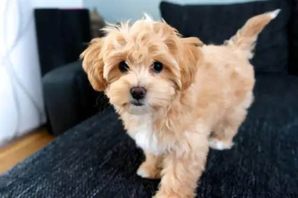
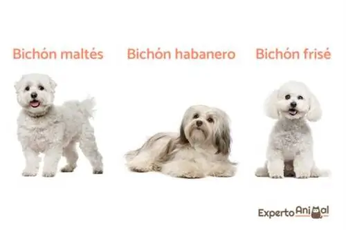
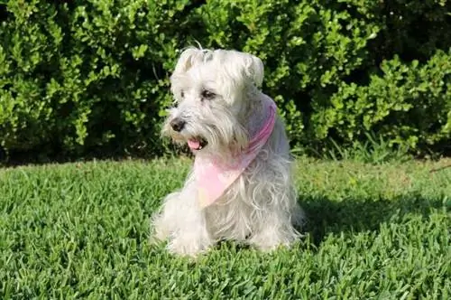

მალტიპუ
ჯვრიდან სათამაშო პუდელსა და მალტის ბიშონს შორის დაიბადა მალტიპუ, ერთ-ერთი ყველაზე საყვარელი ჯუჯა მესტიზო ძაღლი მსოფლიოში. ძაღლების სამყარო. გამომდინარე იქიდან, რომ მისი ერთ-ერთი მშობელი არა ჯუჯა, არამედ სათამაშოა, შესაძლოა, მალტიპუ დაიბადოს, რომელიც ასევე სათამაშოა, ამიტომ აქ ყურადღებას გავამახვილებთ პატარა ვერსიაზე. ჯუჯა მალტიპუ (არა სათამაშო) ჩვეულებრივ იწონის 4-დან 7 კგ-მდე და აქვს გლუვი ან ტალღოვანი ქურთუკი, მკვრივი და მალტის მსგავსი სიგრძით. ეს ძაღლი გამოირჩევა ჭკვიანი, პუდელივით, აქტიური, ბედნიერი და მხიარული. რა თქმა უნდა, ასევე ხშირია ბიჩონისთვის მარტოობისადმი დაბალი ტოლერანტობის მემკვიდრეობა, ფაქტორი, რომელიც გასათვალისწინებელია მისი მიღებისას.
ბიჩონსი
მალტის ბიშონი, ჰავანური ბიშონი და ბიშონ ფრიზი ჯუჯა ძაღლებად ითვლება. მეორეს მხრივ, ბოლონიზი, როგორც წესი, უფრო პატარაა და, შესაბამისად, უფრო ხშირია მისი პოვნა, როგორც სათამაშო ძაღლი. დანარჩენ სამ ჯიშს რომ დავუბრუნდეთ, ვპოულობთ შემდეგ ზომებს: მალტის ბიშონი: სიმაღლეში 20-25 სმ და წონაში 3-4 კგ. ჰავანური: სიმაღლეზე 21-29 სმ და წონაში 4-5 კგ. ბიშონ ფრისე: სიმაღლეში 25-29 სმ და წონაში 5 კგ. ჩვენ შეგვიძლია ვიპოვოთ სამი ჯიში თეთრში, რის გამოც ისინი შედიან მსოფლიოში ყველაზე პოპულარული ბეწვიანი თეთრი ჯუჯა ძაღლების სიაში, რადგან მათი ქურთუკი გრძელი, მატყლისფერი და რბილია. სამივე ძაღლი აქტიური, ბედნიერი და ძალიან მხიარულია. მათ სათანადო სოციალიზაცია სჭირდებათ, რომ ისწავლონ სხვა ძაღლებთან, ცხოველებთან და ადამიანებთან ურთიერთობა, წინააღმდეგ შემთხვევაში ისინი უნდობლები არიან და აგრესიულებიც კი არიან. ანალოგიურად, ფასდაუდებელია იმის გარანტია, რომ ისინი ყოველდღიურად ვარჯიშობენ დაგროვილი ენერგიის გასატარებლად.
მინიატურული შნაუცერი
მიუხედავად სახელისა, არ არის სათამაშო ძაღლი, ვინაიდან ამ ტიპის შნაუზერის ზომები ჯვარსა და წონამდე 30-დან 35 სმ-მდეა 4-დან 8 კგ-მდე ეს არის ერთადერთი ჯიში, რომელშიც მიღებულია სუფთა თეთრი ფერი, რის გამოც ხშირია მათი ამ ფერში პოვნა. უეჭველად, ეს არის ერთ-ერთი ყველაზე პოპულარული ბეწვიანი თეთრი ჯუჯა ძაღლის ჯიში, როგორც მისი მიმზიდველი გარეგნობისთვის, ასევე პრაქტიკულად არ ცვივა. ამას გარდა, მისი ქურთუკი ხასიათდება მყარი, მკვრივი და მავთულიანი, საკმაოდ უხეში ტექსტურით. ტემპერამენტით ძალიან ცნობისმოყვარე, ინტელექტუალური, ერთგული და აქტიური ძაღლია, მაგრამ ასევე ძალიან დამოკიდებული, რადგან მარტოობას კარგად ვერ იტანს.სინამდვილეში, ის მიდრეკილია განშორების შფოთვისკენ, რაც შეიძლება გამოვლინდეს დესტრუქციული ქცევის შემჩნევით მარტოობისას, ზედმეტი ყეფით, ტირილით და ა.შ.
